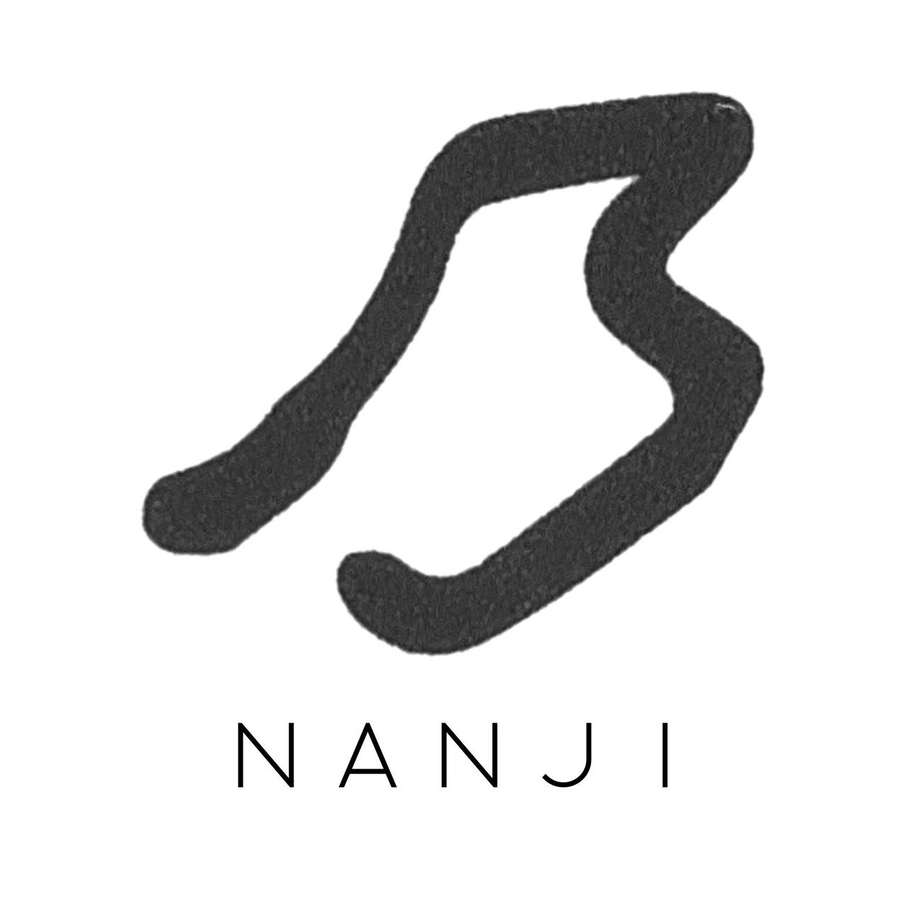
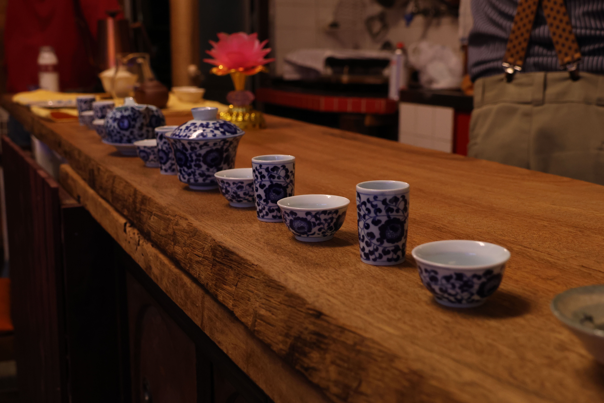
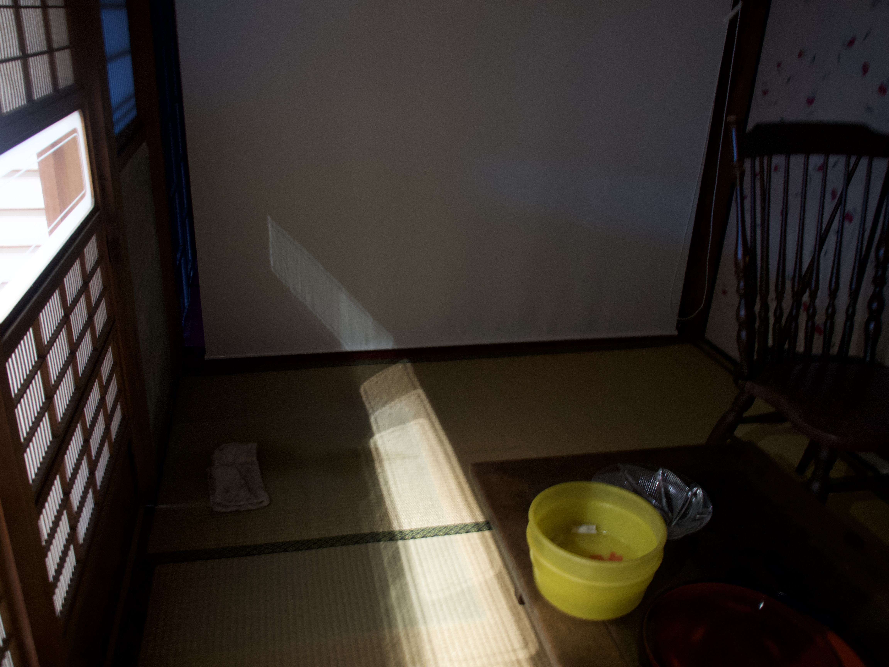
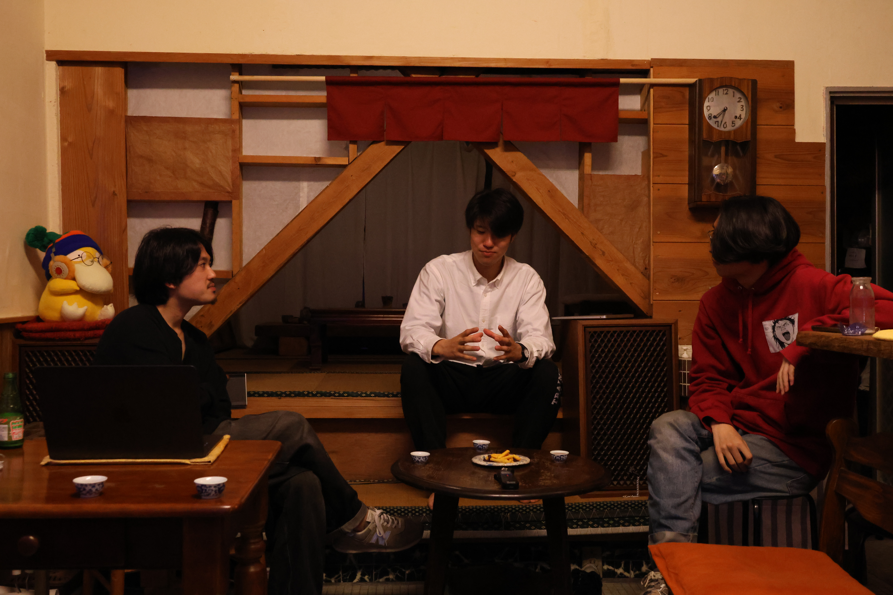
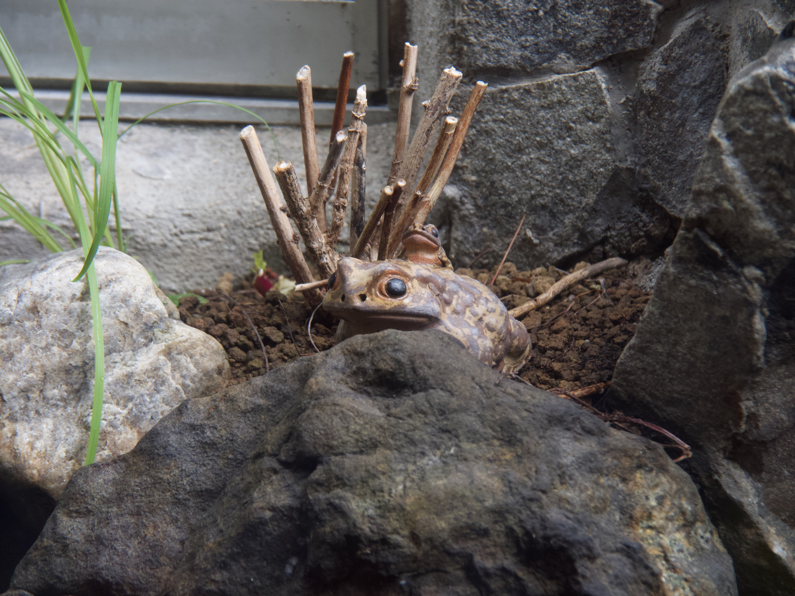
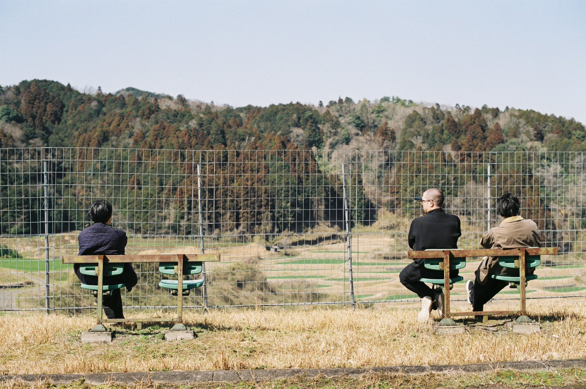
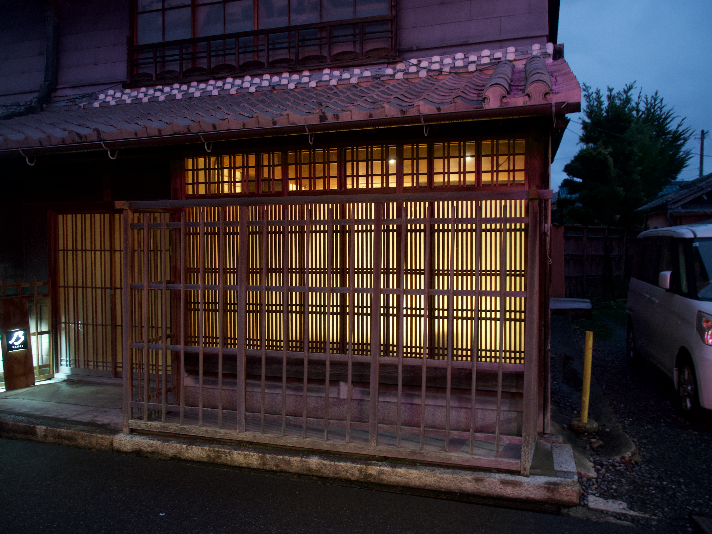

Concept
制度を抜け出し、生きている実感と出会う場所をつくる。
伊賀の街に流れる時間と、人々のいとなみ。
その地層をひとつずつ掘り起こし、ものの温度として手渡していく試みです。
Scene






Photo by 三浦 毬 ／ 杉山 仁彦
伊賀には、人の手で生活を創っている感触がありました。
同じ陶芸の産地でも、多治見や瀬戸では出会えなかった、確かな手ざわりです。
他の地域では工業化が進んでいるからかもしれません。
そして私も、この街で生きてみたいと思いました。
私にとって「生きてみる」とは、自分たちの手で空間を作り、人を招き、
自分たちの居場所をつくっていくことです。
すぐに拠点を移せるわけではないので、まずは足繁く通うことから始め、
展覧会という形で、私の手仕事や思想が宿った空間に人を招いていきます。
居心地のよい場所に、他者の作品があることもあるでしょう。
むしろ、その方が自然なのかもしれません。
誰かが手を入れた作品を眺めながら、誰かがデザインした器で飲みものをいただく。
そんな営みを、この場所で重ねていきたい。
人の手で生活を創っていく手ざわりを、訪れてくださる方々と分かち合えたら——。
Neighborhood
乃 -NANJI- が選ぶ、伊賀の街で訪れてほしい場所たち。
一乃湯のあとに、お気に入りの一杯を。展示の余韻を、街のいとなみに重ねて。
Google Maps｜セレクトリスト
伊賀のおすすめスポット
食・喫茶・店・場所——乃 -NANJI- が選ぶ近隣の行き先一覧。
Store
作家の手を経た品々を、ものの温度のままお届けします。
すべての商品を見る（BASE）→Access